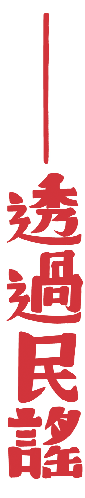

在當代，似乎再也沒有什麼可以被稱作「我們的」藝術，我們總是說：這是誰寫的作品，這是誰編的戲劇，這是誰導的電影……這樣的藝術透過我們的欣賞，間接地與每個人都產生不一樣的意義。可是在祭典之中，我們總會想像藝術是共有的——不是誰做的燈車，也不是誰編的舞蹈，每項藝術都是「我們的」。祭典中的藝術是集體的，它因為你們一起發想、一起製作而產生了直接的關聯性。
舉個例子來說，因為有了這樣對於藝術的想像，我們找上了「民謠」。民謠，顧名思義即是民間的歌謠，作者是誰並不可考，或者說即使我們知道〈雨夜花〉是鄧雨賢寫的，但是這並不重要，因為它已經脫離了鄧雨賢「自己的」作品，已經成為了老嫗孩童都熟悉的歌曲，〈雨夜花〉在人們的口中，一代又一代的流傳之中。
民謠有一種「超越性」，它不只是單獨個人的東西，民謠的成立得與人們的生活發生真實的關係。如果只是學會如何彈好、如何唱好，那超越性並不會發生，只有當人群聚在一起、一齊認同該首民謠，進而產生有機的互動時，那超越性才會浮現。民謠的美即是存在於人們的口中。
民謠可以更加容易地與人們產生關聯，跟民謠的空間也有一定的關係。民謠的空間極大，除了固定的曲調以外，每首歌可以自行填入新的歌詞，就像是在癸卯仲秋的時候，我們運用了〈守牛調〉的曲調，〈守牛調〉是半島的傳統民謠之一，歌詞的創作僅有七字的限制。我們被這樣子的形式吸引，看見了民謠之中更大的空間，可以依照當下所見所想而唱，歌跟人之間如此就有了一層直接的關係，人們透過歌說出自己的語言，這是現在的流行樂無法取代的。

在民謠之中，我們看見了語言的豐富與情感的強烈。就像是漢聲雜誌第三十五期《西北高原的花兒》中描寫的如此：「（花兒，中國西北的民歌）其中比喻和誇張的新奇巧妙、感情的真摯熱烈、語言的生動幽默都出自終生不離田間勞作的串把式之手，想來很令經綸滿腹、學富五車的文人汗顏！」
民謠的語言究竟是怎麼樣的呢？在《歌謠周刊》中有這麼幾句話：
「黑夜聽著山水響，白日看著山水流，有心要跟山水去，又怕山水不回頭。」
沒有什麼艱難的詞彙，卻是人要在山水中生活才能寫出來的真誠。而在《漢聲雜誌》中也看見了：
「月亮上來彎又彎，想你者日夜淚不乾，兩把馬勺舀不完，還得兩副桶來擔！」
用了馬勺啊桶啊這類的詞，我們這些居住在城市裡的人，很難創作出那樣的語言，因為那是拔根而起的、深深嵌入土地的歌詞。確實就如同葉石濤先生說：
「（文學是）地上之鹽。」
歌謠就像鹽一般，不可或缺地撒在常民的生活上。裡面的詞語常常讓人看了會心一笑，因為這就是生活中會遇到的事情、會使用的詞。民謠雖「俗」卻不讓人感覺俗不可耐，這樣的「俗」正是民謠的美麗之處，它被傳唱在不識字的阿嬤口中，被傳唱在尚未讀書的小孩嘴裡，真真實實地反映了人們的生活。
如果能夠有這樣子的一首歌，即使歌詞會隨著時代而變化，但精神如果可以不變——我們用一個簡單不過的曲調，卻能夠創造出無限的情境與情感，那麼令誰聽見都會為之動容的吧，在祭典的藝術之中，我們希望不只是歌，還有舞蹈、繪畫、戲劇等等，所有在街上出現的藝術。這樣的藝術不是只是一個人的，是我們的，是下一代孩子的，是屬於文化的。